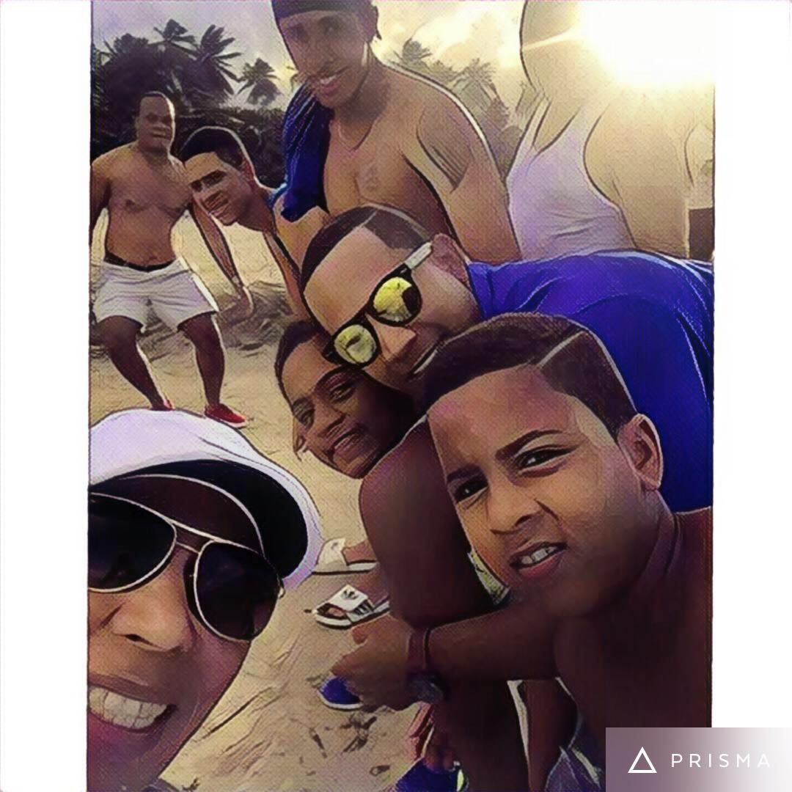
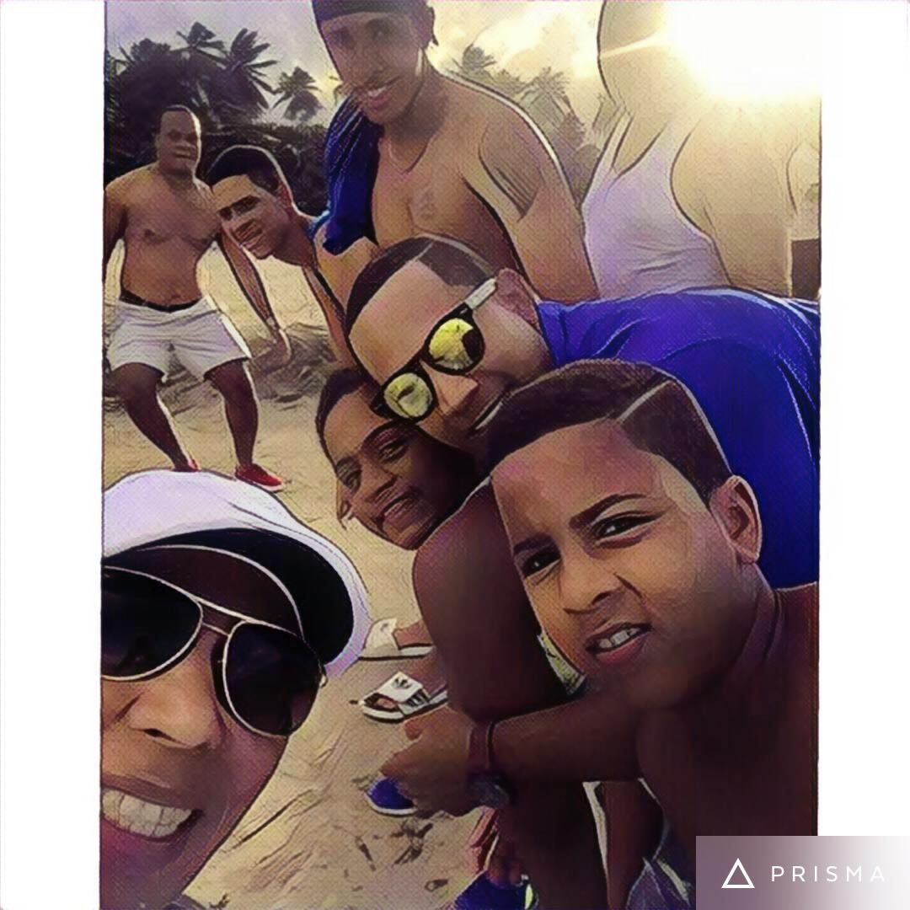

Sobre mi
 

Hola, soy Gabriel, un apasionado desarrollador web con experiencia en HTML, CSS, JavaScript, PHP y MySQL. Me encanta trabajar en equipo y aprender cosas nuevas cada día. Si tienes un proyecto interesante, ¡no dudes en contactarme!